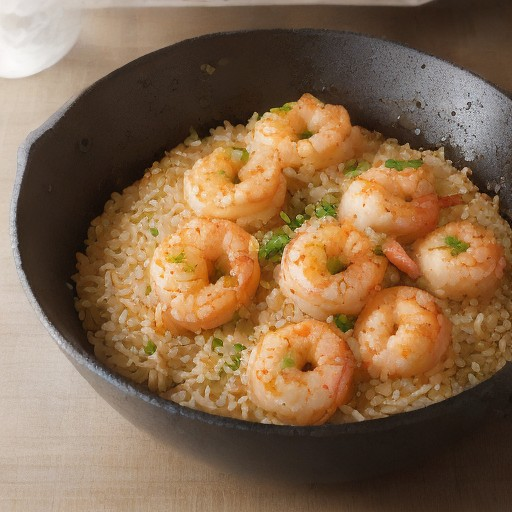

ライス
ガーリックバターぷりぷり海老ピラフ：悪魔の海風！

ぷりぷりの海老と、ガーリックバターの香ばしさで、まるで海を思わせるような悪魔的な味わいに。家庭でも簡単に作れる、特別なピラフのレシピです。
💡 こんな時・こんな人におすすめ！
特別な日や、特別な誰かに贈り物にぴったり
📋 必要な材料（ポストイット風）
材料リスト 1
- 海老200g
- ガーリックバター大さじ2
- ご飯1合
材料リスト 2
- 片栗粉大さじ1
- 醤油小さじ1
🍳 作り方ステップ
1
海老を一口大に切る。
2
ガーリックバターと醤油を混ぜる。
3
ご飯にガーリックバター醤油を混ぜる。
4
ご飯を平らな容器に盛り、海老を加える。
5
片栗粉を混ぜる。
6
ご飯の上に片栗粉を薄く振りかけ、さらにエビを加える。
7
オーブンで10分焼く。
8
仕上げに、お好みでレモン汁を絞る。